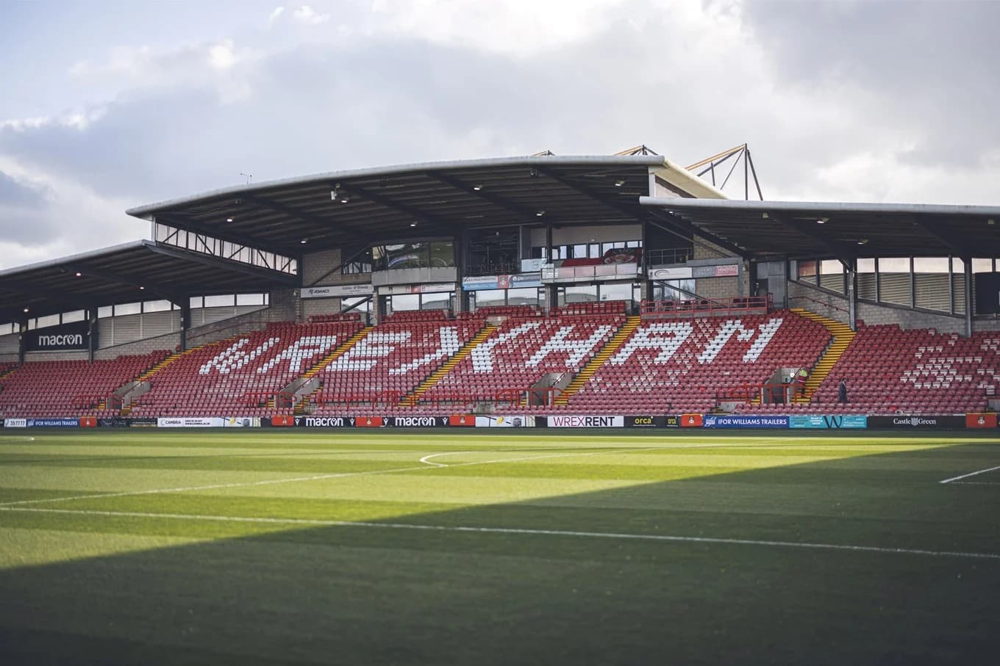

Welcome to Wrexham
Wrexham Football Club is the third oldest professional football club in the world. The ‘Welcome to Wrexham’ documentary has established a worldwide following of this football club and team since the ownership changed to its new Hollywood stars and Co-Chairmen Rob McElhenney and Ryan Reynolds. The club has now gained its third consecutive successive promotion up the football pyramid and is fast becoming one of the most widely followed football (Soccer) teams in the world!
Our visit to the ground involves visiting the souvenir shop and if the famous ‘Turf Pub’ is open, you can stop for a pint and meet some of the locals, (subject to opening times).